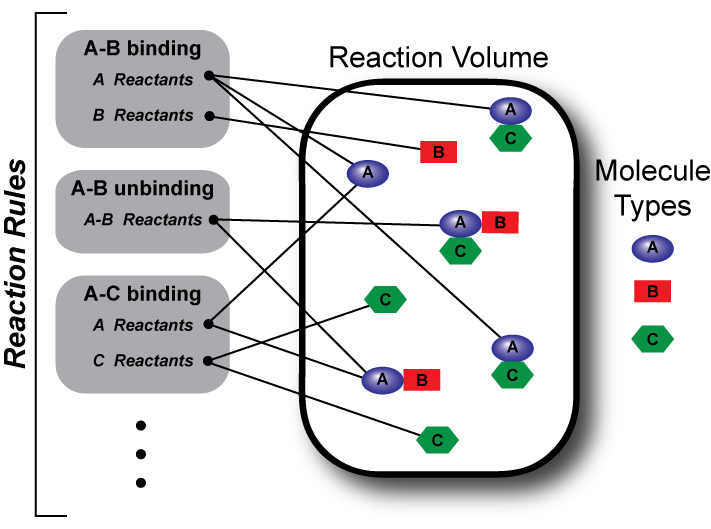

NFsim is a free, open-source, biochemical reaction simulator designed
to handle systems that have a large or even infinite number of possible molecular interactions or states.
NFsim also has advanced and flexible options for simulating coarse-grained representations of complex
nonlinear reaction mechanisms. A publication describing NFsim can be found
here.
NFsim is ideal for modeling polymerization, aggregation, and cooperative reactions
that cannot be handled with traditional stochastic or ODE simulators. Models are specified in
the BioNetGen Langauge, providing a powerful model building
environment. Note that you can now develop BioNetGen and NFsim models with a graphical interface
in rulebender! NFsim runs on Windows, Mac, and Linux.
To get NFsim now, go to the download page.
To find out more about what NFsim can do, see the features page.
To learn more about how to use NFsim, visit the support page.
About NFsim
The NFsim framework was developed and is maintained by a collaboration between the
Emonet lab at Yale University and the
Faeder lab at the University of Pittsburgh,
Support for NFsim comes from the National Science Foundation.
Questions, concerns, and comments should be directed to
Michael Sneddon mwsneddon@lbl.gov.
Please cite NFsim as:
Sneddon MW, Faeder JR and Emonet T. Efficient modeling, simulation and coarse-graining of
biological complexity with NFsim. Nature Methods (2011) 8(2):177-83.
| |
|
 |
NFsim is released under the
GNU General Public License v3.
|
|